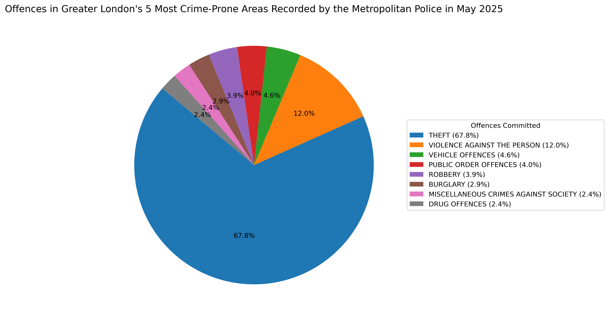

Most Offences in the Most Crime-Prone Areas Recorded by the Metropolitan Police in May 2025

Legend
- THEFT (67.8%)
- VIOLENCE AGAINST THE PERSON (12.0%)
- VEHICLE OFFENCES (4.6%)
- PUBLIC ORDER OFFENCES (4.0%)
- ROBBERY (3.9%)
- BURGLARY (2.9%)
- MISCELLANEOUS CRIMES AGAINST SOCIETY (2.4%)
- DRUG OFFENCES (2.4%)